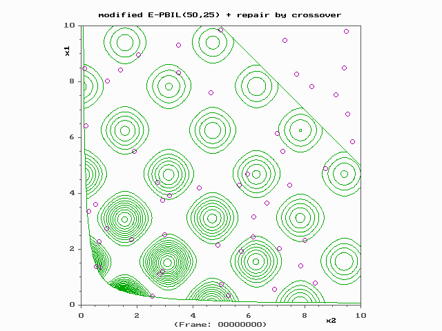

HydroSight - Calibration
Contents
Overview
Global calibration is a fundamental feature of the toolbox. To achieve reproducible and reliable calibration results some knowledge of calibration is required. This page provides a brief overview of global calibration and details the calibration methods available within the toolbox.
Global Calibration Concepts
Global calibration uses a numerical algorithm to minimise the difference between an observed data set, in this case the observed hydrograph, and a model of the observed hydrograph. To achieve this, the difference between the observed and modelled data is reduced to a single number called the objective function, which can be as simple as the difference between the square of the observed data and modelled data at each time point and then summed.
In calibrating the model, the aim is to find the very lowest objective function value and this is achieved by adjusting the model's parameter. Importantly, when the parameters are systematically changed (for example, across a 2-D grid of values for two parameters) and the objective function is calculated at each combination of the two parameters the result is often a smooth surface of model error, called a response surface, and similar to a topographic map.
To illustrate these concepts, the animation below shows a grid of two model parameters, x1 and x2, and green contours of the model error, which are similar to elevation contours of a topographic map. In this example, the contours show many basins or troughs each represented by small circles, that is local optima. Additionally, the deepest optima are those in the bottom-left of the figure. The aim of a numerical global calibration scheme is to find the deepest optima, i.e. the optima with the very lowest possible model error.
Many numerical global calibration schemes find the parameter values giving the lowest error by using a population of parameter sets (i.e. many points within the response surface) that evolve toward the global optima using a processes of similar to natural selection and mutation. Hence, the methods are referred to as evolutionary methods. This is illustrated in the figure below where the initial population of points are randomly distributed over the entire parameter region and they evolve toward the global optima in the bottom left.
An important aspect of global calibration is that the solutions are very rarely 100% reproducible. That is, if the calibration is re-ran three times it is not guaranteed to converge to the same optima each time. This is illustrated in the figure below where one of the runs converges to an optima at x1 ~= 1.5 and x2 ~= 0.5 while the other two runs converge to the true global optima at x1 ~= 0.5 and x2 ~= 1.5. This occurs because global calibration methods rely on randomness in the initial parameter sampling and in the evolutionary process and so each time the scheme is ran it can converge to a different optima. Therefore for all but the most trivial of problems the calibration solution cannot be confirmed to be the global optima. The probability of finding the global optima can however be inferred by re-running the calibration scheme multiple times and reviewing the results. If after running the calibration, say, 10 times the objective function value achieved on the first run is not bettered then it is likely the global optima has been located.
For these reasons, applying a global calibration scheme is more complex than just turning it on and pressing go. All schemes have settings, such as the number of initial points, that need to be tuned. Often this is done to increase the probability that the global optima has been located but it comes at the expense of computational efficiency. To illustrate, a time-series model with, say, 5 parameters requires that a a five dimensional rectangle be searched for the global optima. Using the default settings for the calibration scheme may require time-series model to be run, say, 10,000 times. However, if it is very important that the global optima be located then more rigorous settings may require >100,000 model runs to converge to an optima. Furthermore, different schemes may perform different and so multiple runs may be required using different schemes. In summary, global calibration must be undertaken in the context of the importance of the problem being modelled and the available computational resources.

Figure Attribution: Created by Pasimi. Obtained from https://commons.wikimedia.org/wiki/File%3AEstimation_of_Distribution_Algorithm_animation.gif via Wikimedia Commons
{kind=link}
HydroSight Calibration Schemes
The toolkit provides the following global calibration methods to fit a model to an observed hydrograph. One calibration setting must also be input by the user and the setting is specific to the chosen method.
- Covariance Matrix Adaptation Evolution Strategy (CMA-ES): is an evolutionary global calibration scheme that uses a population of points to approximate the curvature of the response surface, which is then used to evolve the population of points toward a global optima. See Hanson (2006) and https://www.lri.fr/~hansen/cmaesintro.html for details. For the toolbox, the code from the above link was modified to account for complex parameter boundaries and efficient sampling of parameter sets within the boundaries. In applying CMA-ES within the toolbox, the setting controls the number of scheme re-runs with each re-run using double the number of random initial points of the previous run. Peterson and Western (2014) found that four re-runs achieved an acceptable reliability in calibrating nonlinear TFN models.
- SP-UCI : the shuffled complex evolution with principal components analysis - University of California at Irvine (SP-UCI) method is a global optimisation algorithm designed for high-dimensional and complex problems and it is the default scheme for the toolbox. It is based on the Shuffled Complex Evolution (SCE-UA) Method (Duan et al. 1992), but resolves a serious problem in searching over high-dimensional spaces, namely population degeneration. The population degeneration problem refers to the phenomenon that, when searching over the high-dimensional parameter spaces, the population of the searching points is very likely to collapse into a subspace of the parameter space, therefore losing the capability of exploring the entire parameter space. In addition, the SP-UCI method also combines the strength of shuffled complex, the Nelder-Mead simplex, and multi-normal resampling to achieve efficient and effective high-dimensional optimisation. The above description of SP-UCI and the code used in the toolbox was obtained from http://www.mathworks.com/matlabcentral/fileexchange/37949-shuffled-complex-evolution-with-pca--sp-uci--method. The code was, however, edited by Tim Peterson to allow the inclusion of parameter constraints and parallel calculation of each complex. For details of the algorithm see Chu et al. (2010). Finally, in applying SP-UCI within the toolbox, the setting controls the number of complexes (i.e. the number of communities of parameters) per model parameter. Trial have indicated that a value of two gives acceptable results.
- DiffeRential Evolution Adaptive Metropolis algorithm (DREAM): is an evolutionary global calibration scheme that, instead of attempting to identify the very best single parameter set (i.e. lowest objective function value), it identifies 1,000s of parameter sets that are plausible given the observed input forcing and head data (Vrugt, 2016). These parameter seta are called the posterior parameters and are identified using a likelihood function (instead of an objective function) and a Markov chain Monte Carlo algorithm. By running simulations with each of these parameter sets such output as the median simulation with the 5th and 95th predictions uncertainty can be derived. In implementing DREAM into the toolkit, the setting controls the number of generations (i.e. evolutionary iterations). That is, a value of 2 runs 2*10,000 generations. When DREAM has finished, following Vrugt (2016, p293) the plausible parameter sets are identified as those where the R-statistic is <1.2. If the number of parameter sets is greater than an linearly interpolated recommended minimum (Vrugt 2016, p293) then the calibration is deemed successful. If successful, then the maximum number of returned parameter sets is double the recommended minimum. If less than the recommended minimum, but greater than 10% of the recommended minimum, the calibration is deemed partially successful. If <10% then the calibration is deemed to have failed. Finally, the initial Markov chains are obtained by randomly sampling a normal distribution, where the mean is the centre of the plausible parameter range and the standard deviation 1/3 of the plausible parameter range. During the calibration, the chains are limited to within the physical parameter range.
References
- Chu W., Gao X. and Sorooshian S. (2011). A new evolutionary search strategy for global optimization of high-dimensional problems. Information Sciences, 181(22), 4909–4927. DOI: 10.1016/j.ins.2011.06.024
- Duan Q. Y., Sorooshian S. and Gupta, V. (1992). Effective and Efficient Global Optimization for Conceptual Rainfall-Runoff Models. Water Resources Research, 28, 1015-1031, DOI: 10.1029/91WR02985
- Hansen N. (2006). The CMA Evolution Strategy: A Comparing Review. In J.A. Lozano, P. Larrañaga, I. Inza and E. Bengoetxea (Eds.). Towards a new evolutionary computation. Advances in estimation of distribution algorithms. Springer, pp. 75-102.
- Peterson, T. J., and A. W. Western (2014). Nonlinear time-series modeling of unconfined groundwater head. Water Resources Research, 50, 8330–8355, DOI: 10.1002/2013WR014800. PDF Copy
- Vrugt J. (2016). Markov chain Monte Carlo simulation using the DREAM software package: Theory, concepts, and MATLAB implementation. Environmental Modelling & Software 75 (2016) 273-316, DOI: 10.1016/j.envsoft.2015.08.013